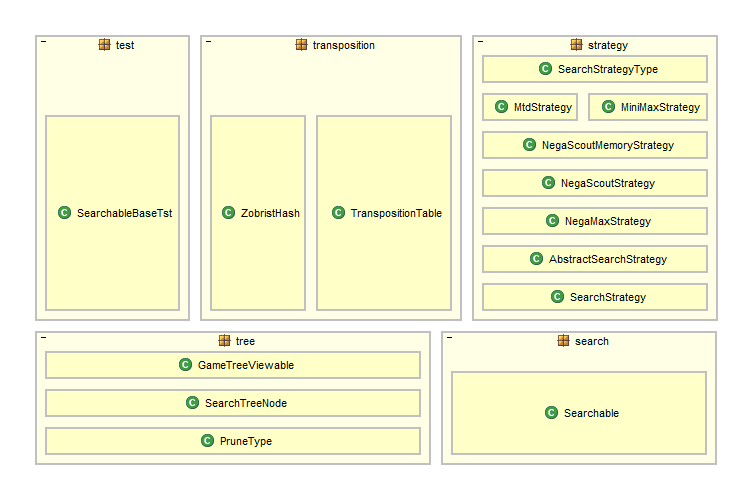

This package provides several different search strategy implementations for 2 player games. Currently only MiniMax and NegaMax are provided, but others could easily be added.
Here is a dependency diagram of the classes 